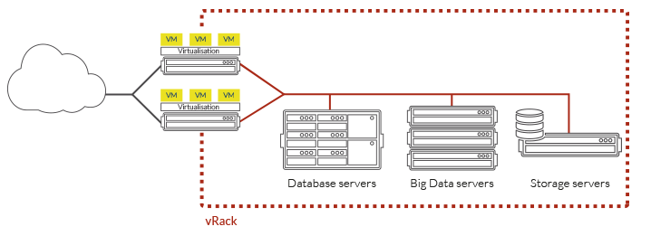

class: center, bottom, regular </img> # OVH Public Cloud # w praktyce Krzysztof Tomaszewski & Paweł Suder 23.02.2018 ??? * przedstawmy się z imienia - Krzysztof i Paweł * jesteśmy z zespołu odpowiedzialnego za R&D OVH Public Cloud * rozwijamy OpenStacka i integrujemy go z OVH usługami --- class: regular ## OVH Public Cloud #### Historia ----- * Chmura prywatna oparta na OVH Private Cloud Computing * Pierwszy Public Cloud w OVH oparty na PCC ??? Odpowiemy na pytania: * Kiedy zaczęliśmy pracować na chmurą? Jakie były początki? * Pierwsze wdrożenie chmury to był Private Cloud opart o VMware. * Koszt korzystania z VMware jest bardzo wysoki - wymagane jest posiadanie wiedzy na temat VMware, utrzymywanie infrastruktury serwerów, gdzie VMware jest uruchomiony oraz opłacanie licencji VMware. * Pojawiła się potrzeba łatwiejszego clouda, który byłby przystępny i tani dla klientów, którzy nie potrzebują całego DC na potrzeby Vmware. * Pierwszy public cloud był oparty na VMwareze, ale był problem z jego skalowalnością. * Wykonany został research i wybrany został OpenStack. --- class: regular ## OVH Public Cloud #### Historia ----- * W 2012 rozpoczęto prace nad OpenStackiem. * hubiC - pierwsze wdrożenie OpenStacka * RunAbove - Public Cloud oparty o OpenStack * W 2014/15 uruchomiono usługę Public Cloud opartą o OpenStack * Od 2015 wdrożono PCI w kolejnych regionach ??? Odpowiemy na pytania: * Dlaczego wybraliśmy OpenStacka? * OpenStack był modularny, było silne community, całość napisana w pythonie. * Zaczęliśmy od wdrożenia OpenStacka na potrzeby Public Cloud Storage (tylko Swift). * Następnie wdrożylismy OpenStacka na potrzeby Public Cloud Infrastructure w ramach spin-offu RunAbove. Celem była wysoka wydajność za przystępną cenę. * Kiedy został osiągnięty próg znajomości OpenStacka w ramach projektu RunAbove, został on wdrożony w ramach OVH Public Cloud. * Ile czasu zajęło nam wdrożenie instalacji OpenStacka? * RunAbove działał 2 lata, po czym wdrożliśmy Public Cloud pod marką OVH. * Kilka znaczących elementów OpenStacka zostało zmienionych, jak np. zmiana sieciwych rozwiązań, aby wspierać publiczny adres IP na instancji. * Dodaliśmy także monitoring (na potrzebny wewnętrzne i klienta) * Należało połączyć PCI z systemem billingowym, który istniał w OVH. * Na jakie problemy napotykaliśmy w trakcie prac wdrażania? * Problemy wieku dziecięcego, Grizzly/Havana (wdrożony), wiele problemów, wiele niespójności. --- class: regular ## OVH Public Cloud #### Usługa ----- * Dysk root instancji bazujący na SSD: * <b>plus</b>: wydajność * <b>minus</b>: utrudniona migracja, nie da się szybko przywrócić VMki po wyłączeniu hosta * Dodatkowe dyski (wolumeny) umieszczone są na Cephie. * Sieć publiczna chroniona jest systemem Anti-DDoS. ----- * Nowe komponenty, jakie chcemy wdrożyć: * Load Balancer * Metryki, alarmy i automatyzacja * Usługi L3 ??? * Jakie cechy posiada OVH Public Cloud? * _jak na slajdzie_ * Jakie obecnie mamy wyzwania związane z instalacją OpenStacka? * Być up to date, ale nie zawsze. Dostarczać nowych usług, które pojawiają się w OpenStacku, takich L3 usługi, router, metryki. --- class: center, middle, regular ## OVH Public Cloud #### Przykład użycia ??? Przejdźmy do przykładu użycia, czyli pokażemy, jak można wykorzystać projekt cloud, na własne potrzeby, w kilku prostych krokach. --- class: center, middle, regular ## OVH Public Cloud #### Panel klienta ----- <img alt="Dodanie klucza SSH" style="width: 60%;" src="dumps/Zrzut ekranu 2018-02-13 o 10.02.42.png"></img> ----- _Do użycia projektu wymagany jest klucz publiczny SSH_ ??? Projekt cloud udało się utworzyć i pierwsze co należy wykonać, to wygenerować klucz SSH na swoim komputerze, jeśli go nie ma, a następnie dodać jego publiczną cześć do projektu, poprzez zakładkę "Klucz SSH". Klucz ten będzie wykorzystywany do logowania się na instancję. **Uwaga** Ten klucz nie jest widoczny z poziomu OpenStack API, jest on widoczny tylko w panelu klienta. --- class: center, middle, regular ## OVH Public Cloud #### Panel klienta ----- <img alt="Menu projektu" style="width: 50%;" src="dumps/Zrzut ekranu 2018-02-13 o 10.05.31.png"></img> ----- _Dodanie serwera wykonać można przez menu projektu_ ??? Następnie możemy przejść do uruchomienia instancji. Aby uruchomić nową instancję, należy w widoku infrastruktury projektu, wybrać z menu "Dodaj serwer". --- class: center, middle, regular ## OVH Public Cloud #### Panel klienta ----- <img alt="Konfiguracja instancji" style="width: 60%;" src="dumps/Zrzut ekranu 2018-02-13 o 10.15.56.png"></img> ----- _Opcje konfiguracyjne przy uruchomieniu instancji_ ??? Tworząc instację, należy wybrać region, obraz bazowy i typ serwera. Na potrzeby prezentacji użyłem Ubuntu 16.04, z odmianą sandbox, w Warszawie, o nazwie `web-1`. Przy uruchomieniu instancji określamy także sposób naliczania opłat - godzinowy lub miesięczny. Istnieje możliwość późniejszej zmiany sposobu naliczania opłat, z godzinowego na miesięczny. Opłacając instancję w rozliczeniu miesięcznym, kwota jest o połowę niższa, w stosunku do tej, jaką zapłacilibyśmy, przy rozliczaniu za godziny przez miesiąc. Czym jest region? * jest to DC(centrum danych), w ramach którego znajdują się fizyczne maszyny, na których uruchamiane są instancje, czyli serwery * w panelu klienta widoczne są instancje ze wszystkich regionów Czym jest obraz bazowy? * jest to dysk, z którego jest uruchamiana instancja * dla każdej z instancji, tworzony jest oddzielny dysk podstawowy, w oparciu o ten obraz * możliwe jest wykonanie własnych obrazów, wykonując snapshoty działającej instancji Czym jest typ serwera? * jest to definicja zasobów, z którymi uruchamiana jest instancja * określa przede wszystkim ilość rdzeni, wielkość pamięci operacyjnej oraz rozmiar podstawowego dysku instancji --- class: center, middle, regular ## OVH Public Cloud #### Panel klienta ----- <img alt="Dodatkowe opcje" style="width: 55%;" src="dumps/Zrzut ekranu 2018-02-13 o 10.04.50.png"></img> ----- _Dodatkowe opcje konfiguracyjne_ ??? Dodatkowo, przy tworzeniu instancji możliwe jest określenie liczby instancji do uruchomienia, podanie skryptu do konfiguracji instancji (wykonywanego po uruchomieniu systemu) czy określenie sieci prywatnej, do jakiej ma zostać instancja podłączona. Przy uruchomieniu instancji użyjemy skryptu post-install, by móc skorzystać później z skryptów Ansible. <pre> #!/usr/bin/env bash sudo apt update sudo apt install -y build-essential python python-dev python-pip python-setuptools </pre> O używaniu sieci prywatnej powiem przy okazji vRacka. --- class: center, middle, regular ## OVH Public Cloud #### Panel klienta ----- <img alt="Logowanie" style="width: 65%;" src="dumps/Zrzut ekranu 2018-02-13 o 10.17.16.png"></img> ----- <img alt="Informacje" style="width: 65%;" src="dumps/Zrzut ekranu 2018-02-13 o 10.17.26.png"></img> ----- _Informacje o dostępie do instancji_ ??? Po chwili, gdy instancja będzie gotowa, pojawi się komunikat, w jaki sposób możemy się zalogować. --- class: center, middle, regular ## OVH Public Cloud #### Instancja ----- <div> <asciinema-player src="casts/01-check-instance.json"></asciinema-player> </div> ----- ??? Oto przykład, na którym widać, że na nowo utworzonej instancji, jest określona liczba procesorów, ilości pamięci operacyjnej oraz jest określonej wielkości dysk twardy. ``` lscpu | grep -e Architecture -e CPU -e Thread -e Core free -m lsblk ip addr show ens3 ``` --- class: regular ## OVH Public Cloud #### OpenStack ----- - Public Cloud oparty jest o OpenStack - Udostępnione jest API OpenStacka - Możliwość korzystania z skryptów do automatyzacji ??? Można korzystać z Public Cloud przez panel klienta. Można zarządzać nim także przez OpenStack API. * Infrastruktura Public Clouda w OVH oparta jest o OpenStacka. * Serwisy OpenStacka posiadają API, które w naszej instalacji są dostępne dla wszystkich, którzy mają projekty Public Cloud. * Dostęp do OpenStack API daje możliwość korzystania z narzędzi i skryptów do automatyzacji działania instalacji opartej na cloudzie, jak na przykład Ansible, Terraform, itd. * Nasza instalacja posiada obecnie dwie wersje API: Juno oraz Newton. Pracujemy nad posiadaniem tylko jednej wersji - Newton. --- class: center, middle, regular ## OVH Public Cloud #### OpenStack Horizon ----- <img alt="Logowanie" style="width: 90%;" src="dumps/Zrzut ekranu 2018-02-13 o 11.23.10.png"></img> ----- _Widok w OpenStack Horizon_ ??? Oto jak jest widoczna lista instancji z poziomu OpenStack Horizon. --- class: center, middle, regular ## OVH Public Cloud #### OpenStack API ----- <div> <asciinema-player src="casts/02-nova-commands.json"></asciinema-player> </div> ??? Oto przykład, na którym jest widoczne, jak można uruchomić instancję z poziomu OpenStack API. Nim instanacja zostanie uruchomiona, należy dodać klucz SSH raz jeszcze. Po chwili można zalogowac się na instancję przez SSH. ``` source ~/Spaces/GitHub/openstack-playground/openrc-demo-waw1.sh nova list --fields name,status nova keypair-list nova keypair-add --pub-key ~/.ssh/id_rsa.pub psuder_desktop nova keypair-list nova boot --flavor s1-4 --image "Ubuntu 16.04" --nic net-name=Ext-Net --key-name psuder_desktop testing nova list --fields name,status nova list --fields name,status nova list --fields name,networks ssh ubuntu@54.37.131.86 uptime nova list --fields name nova delete testing nova list --fields name ``` ----- --- class: regular ## OVH Public Cloud #### Sieć publiczna ----- - Publiczne adresy IP skonfigurowane bezpośrednio na instancji - Brak ruchu L2 na interfejsie instancji - Możliwość korzystania z adresów IP FailOver - Brak klasycznego węzła sieciowego <pre style="font-size: 0.5em;"> ➜ ~ nova list --fields name,status,networks +--------------------------------------+-------+--------+-----------------------------------------------+ | ID | Name | Status | Networks | +--------------------------------------+-------+--------+-----------------------------------------------+ | a8337ef7-693b-4f8f-a90c-b5d4ed087528 | web-1 | ACTIVE | Ext-Net=<span class="green">54.38.136.26</span>, 2001:41d0:601:2000::26c | +--------------------------------------+-------+--------+-----------------------------------------------+ </pre> <pre style="font-size: 0.5em;"> ubuntu@web-1:~$ ip addr show ens3 2: ens3: <BROADCAST,MULTICAST,UP,LOWER_UP> mtu 1500 qdisc pfifo_fast state UP group default qlen 1000 link/ether fa:16:3e:5b:71:db brd ff:ff:ff:ff:ff:ff inet <span class="green">54.38.136.26/32</span> brd 54.38.136.26 scope global ens3 valid_lft forever preferred_lft forever inet6 fe80::f816:3eff:fe5b:71db/64 scope link valid_lft forever preferred_lft forever ubuntu@web-1:~$ ip route default via 54.38.136.1 dev ens3 54.38.136.1 dev ens3 scope link </pre> ??? Kilka zdań o sieci publicznej: * sieć to najbardziej _zmieniona_ część naszego OpenStacka; całe API jest zgodne z OpenStack * każda z instancji posiada adres sieci publicznej; brak klasycznego Neutronowego węzłą sieciowego * adres sieci publicznej ma maskę /32; brak ruchu rozgłoszeniowego (L2) na interfejsie instancji * ruch między siecią OVH a zewnetrzną jest chroniony przez system Anti-DDoS * możliwość podpięcia adresów IP Failover z OVH do VMek, co pozwala na przeniesienie adresu IP z serwera dedykowanego * na slajdzie widoczny jest przykład instancji z przypisanym publicznym adresem IP A teraz przejdźmy do sieci prywatnych. --- class: center, middle, regular ## OVH Public Cloud #### Sieć prywatna - vRack ----- <img src="images/vrack.png" class="light"></img> ----- Prywatne połączenie wszystkich serwerowni OVH na świecie ??? Sieć prywatna (tenant network) oparta jest o usługę vRack OVH. vRack pozwala na połączenie prywatną siecią L2 różne usługi, której mają do dostęp do vRacka. --- class: center, middle, regular ## OVH Public Cloud #### Sieć prywatna - vRack ----- <img src="images/vrack-isolation.png" class="light"></img> ----- vRack pozwala na odizolowanie najważniejszych serwerów w ramach prywatnej sieci VLAN. Twoje dane są zabezpieczone a komunikacja między serwerami nie odbywa się za pomocą sieci publicznej. ??? Można wdrożyć aż do 4000 prywatnych sieci VLAN. Sieci prywatne mogą służyć do różnych połączeń. --- class: center, middle, regular ## OVH Public Cloud #### Sieć prywatna - vRack ----- </img> ----- Możliwe połączenie Public Cloud z serwerami dedykowanymi. ??? Możliwe jest połączenie instancji public clouda z serwerami dedykowanymi. Do serwerów dedykowanych dostarczane jest łącze trunk, a do instancji cloud - wiele interfejsów różnych sieci prywatnych - ramki VLAN nie są widoczne. --- class: center, middle, regular ## OVH Public Cloud #### Sieć prywatna - vRack ----- <img alt="Dodawanie sieci prywatnej vRack" style="width: 40%;" src="dumps/Zrzut ekranu 2018-02-13 o 11.44.16.png"></img> ----- _Dodawanie sieci prywatnej vRack_ ??? Jak to wygląda w praktyce? Aby dodać sieć prywatną, klikamy na "plus" w widoku vRacka, w projekcie cloud. --- class: center, middle, regular ## OVH Public Cloud #### Sieć prywatna - vRack ----- <img alt="Widok sieci prywatnych vRack" style="width: 40%;" src="dumps/Zrzut ekranu 2018-02-13 o 11.45.13.png"></img> ----- _Widok sieci prywatnych vRack_ ??? Oto jak prezentowana jest lista sieci prywatnych vRack w projekcie cloud. --- class: center, middle, regular ## OVH Public Cloud #### Sieć prywatna - vRack ----- <img alt="Widok sieci prywatnych vRack" style="width: 80%;" src="dumps/Zrzut ekranu 2018-02-13 o 12.19.01.png"></img> ----- _Widok sieci w OpenStack Horizon_ ??? Oto jak prezentowana jest lista sieci prywatnych vRack przez OpenStack Horizon. --- class: center, middle, regular ## OVH Public Cloud #### Sieć prywatna - vRack ----- <pre style="font-size: 0.45em;"> ➜ ~ neutron net-show Private-Net neutron CLI is deprecated and will be removed in the future. Use openstack CLI instead. +--------------------------+--------------------------------------+ | Field | Value | +--------------------------+--------------------------------------+ | admin_state_up | True | | availability_zone_hints | | | availability_zones | nova | | created_at | 2018-02-13T10:44:43Z | | description | | | id | adc65d0c-abd3-47d9-a1a3-96ed4ea50485 | | ipv4_address_scope | | | ipv6_address_scope | | | mtu | 9000 | | name | Private-Net | | project_id | 84506b08626d4e03a581d170f3bc53d2 | | <span class="red">provider:network_type</span> | <span class="red">vrack</span> | | <span class="red">provider:segmentation_id</span> | <span class="red">0</span> | | qos_policy_id | | | revision_number | 4 | | router:external | False | | shared | False | | status | ACTIVE | | subnets | b55fd630-79e4-4101-9d30-12ba693533ca | | tags | | | tenant_id | 84506b08626d4e03a581d170f3bc53d2 | | updated_at | 2018-02-13T10:44:49Z | +--------------------------+--------------------------------------+ </pre> ??? Oto jak prezentowana jest lista sieci prywatnych vRack przez OpenStack API. Ważny jest, aby `segmentation_id` był taki sam w każdym regionie. --- class: center, middle, regular ## OVH Public Cloud #### Sieć prywatna - vRack ----- <pre style="font-size: 0.45em;"> ➜ ~ neutron subnet-show b55fd630-79e4-4101-9d30-12ba693533ca neutron CLI is deprecated and will be removed in the future. Use openstack CLI instead. +-------------------+----------------------------------------------------+ | Field | Value | +-------------------+----------------------------------------------------+ | <span class="red">allocation_pools</span> | <span class="red">{"start": "192.168.0.214", "end": "192.168.0.254"}</span> | | cidr | 192.168.0.0/24 | | created_at | 2018-02-13T10:44:49Z | | description | | | dns_nameservers | | | enable_dhcp | True | | gateway_ip | | | host_routes | | | id | b55fd630-79e4-4101-9d30-12ba693533ca | | ip_version | 4 | | ipv6_address_mode | | | ipv6_ra_mode | | | name | | | network_id | adc65d0c-abd3-47d9-a1a3-96ed4ea50485 | | project_id | 84506b08626d4e03a581d170f3bc53d2 | | revision_number | 2 | | service_types | | | subnetpool_id | | | tenant_id | 84506b08626d4e03a581d170f3bc53d2 | | updated_at | 2018-02-13T10:44:49Z | +-------------------+----------------------------------------------------+ </pre> ??? Subnet jest taki sam w wielu regionach, ale są różne zakresy adresów przyznawanych przez DHCP, tak aby nie było overlappingu adresów IP. --- class: center, middle, regular ## OVH Public Cloud #### Sieć prywatna - vRack ----- <img alt="Użycie sieci prywatnych vRack" style="width: 70%;" src="dumps/Zrzut ekranu 2018-02-13 o 11.45.39.png"></img> ----- _Użycie sieci prywatnych vRack przy tworzeniu nowej instancji_ ??? Mając sieć prywatną stworzoną, przejdźmy do jej użycia. Oto jak można użyć sieci prywatnej vRack z poziomu panelu klienta. --- class: center, middle, regular ## OVH Public Cloud #### Sieć prywatna - vRack ----- <div class="container"> <div class="row"> <div class="col-sm-4"> <img alt="Uruchomienie instancji z siecią vRack" src="dumps/Zrzut ekranu 2018-02-13 o 13.30.21.png"></img> </div> <div class="col-sm-8"> <img alt="Uruchomienie instancji z siecią vRack" style="width: 100%" src="dumps/Zrzut ekranu 2018-02-13 o 13.30.37.png"></img> </div> </div> </div> ----- _Uruchomienie instancji z siecią vRack_ ??? Oto jak widać instancję z adresami z dwóch sieci: publicznej i prywatnej. --- class: center, middle, regular ## OVH Public Cloud #### OpenStack API i vRack ----- <div> <asciinema-player src="casts/03-vrack-commands.json"></asciinema-player> </div> ??? Oto przykład, na którym jest widoczne, jak można uruchomić instancję z poziomu OpenStack API z dodatkowym interfejsem oraz jak podłączyć dodatkowy interfejs sieci prywatnej do działającej instancji. ``` nova list --fields name,status nova list --fields name,networks nova boot --flavor s1-4 --image "Ubuntu 16.04" --nic net-name=Ext-Net --nic net-name=Private-Net --key-name psuder_desktop testing nova list --fields name,status nova list --fields name,status nova list --fields name,networks | grep 192.168.0.218 nova delete 735c849c-ad24-4093-8f33-5ce005c2470e neutron net-list | grep Private-Net nova interface-attach web-1 --net-id adc65d0c-abd3-47d9-a1a3-96ed4ea50485 ssh ubuntu@54.38.136.26 ip link sudo dhclient ens6 nova list --fields name,networks | grep 192.168.0.218 ``` --- class: center, middle, regular ## OVH Public Cloud #### Sieć prywatna - vRack ----- <pre style="font-size: 0.45em;"> ➜ ~ nova list --fields name,status,networks +--------------------------------------+-------+--------+----------------------------------------------------------------------------+ | ID | Name | Status | Networks | +--------------------------------------+-------+--------+----------------------------------------------------------------------------+ | 9c1097ae-2e7e-4244-91b6-017ed75191b4 | db-1 | ACTIVE | Ext-Net=145.239.28.190, 2001:41d0:601:2000::245; <span class="green">Private-Net=192.168.0.224</span> | | a8337ef7-693b-4f8f-a90c-b5d4ed087528 | web-1 | ACTIVE | Ext-Net=54.38.136.26, 2001:41d0:601:2000::26c; <span class="green">Private-Net=192.168.0.218</span> | +--------------------------------------+-------+--------+----------------------------------------------------------------------------+ </pre> ----- <img alt="Widok listy instancji z dwoma sieciami" style="width: 60%;" src="dumps/Zrzut ekranu 2018-02-13 o 14.10.28.png"></img> ----- _Widok listy instancji z dwoma sieciami_ ??? Oto jak prezentowana jest lista instancji, która mają prywatne interfejsy. --- class: center, middle, regular ## OVH Public Cloud #### Sieć prywatna - vRack ----- <pre style="font-size: 0.5em;"> ubuntu@web-1:~$ mtr -r -c 1 <span class="green">192.168.0.224</span> Start: Tue Feb 13 13:17:33 2018 HOST: web-1 Loss% Snt Last Avg Best Wrst StDev 1.|-- 192.168.0.224 0.0% 1 1.4 1.4 1.4 1.4 0.0 </pre> <pre style="font-size: 0.5em;"> ubuntu@web-1:~$ mtr -r -c 1 <span class="red">145.239.28.190</span> Start: Tue Feb 13 13:17:52 2018 HOST: web-1 Loss% Snt Last Avg Best Wrst StDev 1.|-- 54.38.136.1 0.0% 1 0.2 0.2 0.2 0.2 0.0 2.|-- 192.168.250.254 0.0% 1 0.1 0.1 0.1 0.1 0.0 3.|-- 192.168.250.8 0.0% 1 0.3 0.3 0.3 0.3 0.0 4.|-- ip-145-239-28.eu 0.0% 1 0.4 0.4 0.4 0.4 0.0 </pre> ??? Na slajdzie widać, jaka jest trasa pakietu w ramach sieci publicznej oraz lokalnej (prywatnej) vRack. Technologia vRack (wirtualna szafa) pozwala na połączenie, odizolowanie i rozdzielenie usług OVH w ramach jednej lub kilku prywatnych i zabezpieczonych sieci L2. --- class: regular ## OVH Public Cloud #### Automatyzacja ----- * Publiczne OpenStack API * Narzędzia do automatyzacji: Ansible, Terraform * Konteneryzacja aplikacji dzięki Dockerowi ??? Przejdźmy do następnego tematu naszej prezentacji, a mianowicie użycia OpenStack API z wykorzystaniem skryptów do automatyzacji, jak np. Ansible. * Dzięki OpenStack API oraz dostępnych publicznie narzędzi, można z łatwością uruchomić usługę opartą o cloud. * Z wykorzystaniem Ansible czy Terraform możemy uruchomić i skonfigurować kilka instancji na potrzeby uruchomienia aplikacji na cloudzie. * Aplikacje można uruchamiać bezpośrednio na instancjach lub w ramach kontenerów uruchomionych na instancjach. --- class: center, middle, regular ## OVH Public Cloud #### Automatyzacja ----- <div> <asciinema-player src="casts/04-ansible-commands.json"></asciinema-player> </div> ??? Oto przykład, gdzie widać, jak z pomocą skryptu Ansible uruchamiane są dwie instancje i konfigurowane, tak aby można była na nich korzystać z mysqla i wordpressa. ``` ansible-playbook playbook-1.yml nova list --fields name,status,networks ssh ubuntu@54.37.130.17 sudo docker ps mysql -u db_user -H 192.168.0.223 -p show databases; use db_wordpress; show tables; ``` --- class: center, middle, regular ## OVH Public Cloud #### Automatyzacja ----- <img alt="Widok instalacji Wordpressa" style="width: 60%;" src="dumps/Zrzut ekranu 2018-02-16 o 12.11.40.png"></img> ----- _Widok instalacji Wordpressa_ ??? Oto jak to wygląda z poziomu UI. Na slajdzie widać ekran podstawowej konfiguracji Wordpressa. --- class: center, middle, regular ## OVH Public Cloud #### Automatyzacja ----- <img alt="Widok panelu admin Wordpress" style="width: 60%;" src="dumps/Zrzut ekranu 2018-02-16 o 12.12.11.png"></img> ----- _Widok panelu admin Wordpress_ ??? Po chwili widać panel admina Wordpress. --- class: center, middle, regular ## OVH Public Cloud #### Przestrzeń dyskowa ----- <img alt="Widok przestrzeni dyskowej" style="width: 70%;" src="dumps/Zrzut ekranu 2018-02-16 o 11.46.40.png"></img> ----- _Widok przestrzeni dyskowej_ ??? W ramach OpenStacka istnieje serwis Swift, który pozwala na statyczne przechowywanie plików. Object storage możemy użyć jako przestrzeń na backup. --- class: center, middle, regular ## OVH Public Cloud ----- <img alt="Dodawanie nowego kontenera" style="width: 60%;" src="dumps/Zrzut ekranu 2018-02-16 o 11.46.56.png"></img> ----- <img alt="Dodawanie nowego kontenera" style="width: 60%;" src="dumps/Zrzut ekranu 2018-02-16 o 11.51.12.png"></img> ----- _Dodawanie nowego kontenera_ ??? Z poziomu panelu klienta można utworzyć nowy kontener na pliki. Wymagane jest wybranie regionu oraz typu. Typ oznaczony jako hosting statyczny, to kontener publiczny, który posiada podstawowy layout strony HTML. Kontener z sekcji Public Cloud Archive to kontener, do którego można wysyłać pliki przy pomocy rsynca. --- class: center, middle, regular ## OVH Public Cloud #### Przestrzeń dyskowa ----- <img alt="Nowy kontener dodany" style="width: 80%;" src="dumps/Zrzut ekranu 2018-02-16 o 11.51.46.png"></img> ----- _Nowy kontener dodany_ ??? Na potrzeby backupu wykorzystać można kontener prywatny. --- class: center, middle, regular ## OVH Public Cloud #### Integracja ----- <img alt="Instalowanie pluginu w Wordpress" style="width: 80%;" src="dumps/Zrzut ekranu 2018-02-16 o 12.12.40.png"></img> ----- _Instalowanie pluginu w Wordpress_ ??? Dla Wordpressa istnieje plugin, który korzysta z OpenStack Swift (przestrzeni dyskowej), gdzie umieszczany jest backup Wordpressa. --- class: center, middle, regular ## OVH Public Cloud #### Integracja ----- <img alt="Konfigurowanie pluginu w Wordpress" style="width: 80%;" src="dumps/Zrzut ekranu 2018-02-16 o 12.13.19.png"></img> ----- _Konfigurowanie pluginu w Wordpress_ ??? Plugin pozwala na wybranie OpenStack Swift. Aby skonfigurować w pełni ten plugin, potrzebujemy wykonać kilka dodatkowych kroków przez panel klienta. --- class: center, middle, regular ## OVH Public Cloud #### Integracja ----- <img alt="Dodawanie nowego użytkownika w OpenStack projekcie" style="width: 50%;" src="dumps/Zrzut ekranu 2018-02-16 o 12.13.44.png"></img> <img alt="Dodawanie nowego użytkownika w OpenStack projekcie" style="width: 50%;" src="dumps/Zrzut ekranu 2018-02-16 o 12.14.08.png"></img> ----- _Dodawanie nowego użytkownika w OpenStack projekcie_ ??? Należy utworzyć nowego użytkownika, który ma dostęp do projektu cloud przez OpenStack API. --- class: center, middle, regular ## OVH Public Cloud #### Integracja ----- <div class="container"> <div class="row"> <div class="col-sm-4"> <img alt="Pobranie konfiguracji dostępu do OpenStack API" src="dumps/Zrzut ekranu 2018-02-16 o 12.14.16.png"></img> </div> <div class="col-sm-8"> <img alt="Pobranie konfiguracji dostępu do OpenStack API" style="width: 65%;" src="dumps/Zrzut ekranu 2018-02-16 o 12.14.35.png"></img> </div> </div> </div> ----- _Pobranie konfiguracji dostępu do OpenStack API_ ??? Do konfiguracji pluginu potrzeba nam kilka dodatkowych informacji, które można odczytać z pliku konfiguracyjnego OpenStack. --- class: center, middle, regular ## OVH Public Cloud #### Integracja ----- <img alt="Pobranie konfiguracji dostępu do OpenStack API" style="width: 40%;" src="dumps/Zrzut ekranu 2018-02-16 o 12.15.27.png"></img> ----- _Pobranie konfiguracji dostępu do OpenStack API_ ??? W pliku konfiguracyjnym można znaleźć informacje o: * URL serwisu do uwierzytelniania usługi * UUID projektu * nazwę projektu * nazwę użytkownika * nazwę regionu (wybrany przy pobieraniu pliku konfiguracyjnego) --- class: center, middle, regular ## OVH Public Cloud #### Integracja ----- <div class="container"> <div class="row"> <div class="col-sm-6"> <img alt="Konfiguracja pluginu w Wordpress" src="dumps/Zrzut ekranu 2018-02-16 o 12.15.42.png"></img> </div> <div class="col-sm-6"> <img alt="Konfiguracja pluginu w Wordpress" src="dumps/Zrzut ekranu 2018-02-16 o 12.16.10.png"></img> </div> </div> </div> ----- _Konfiguracja pluginu w Wordpress_ ??? Dane z pliku konfiguracyjnego podajemy w konfiguracji pluginu w Wordpressie. Przed zapisaniem sprawdzamy, czy można ustawienia działają. --- class: center, middle, regular ## OVH Public Cloud #### Integracja ----- <img alt="Backup" style="width: 55t%;" src="dumps/Zrzut ekranu 2018-02-16 o 12.16.44.png"></img> ----- <img alt="Backup" style="width: 55%;" src="dumps/Zrzut ekranu 2018-02-16 o 12.17.03.png"></img> ----- _Konfiguracja pluginu w Wordpress_ ??? Po wykonaniu backup, w kontenerze widoczne są pliku wygenerowane przez plugin. --- class: regular ## OVH Public Cloud #### Podsumowanie ----- * Instalacja rozwiązania cloud zajmuje czas * Korzystanie z chmury prywatnej wymaga zasobów * Chmura publiczna oparta OpenStack jest prosta w użyciu * Ze względu na powszechność OpenStacka, istnieje wiele narzędzi do automatyzacji. * Dzięki automatyzacji możliwe jest uruchomienie dowolnej aplikacji. ??? Korzystanie z public clouda jest prostsze niż uruchamianie własnego clouda. Istnieje wiele narzędzi takich, jak Ansible czy Terraform, które pozwalają na automatyzację uruchomienia aplikacji na cloudzie. Wdrożenie aplikacji jest prostsze dzięki temu. --- class: center, middle, regular ## Pytania ??? Jakie mają państwo pytania? --- class: center, middle, regular ## Dziękujemy ??? Ukłony, oklaski..